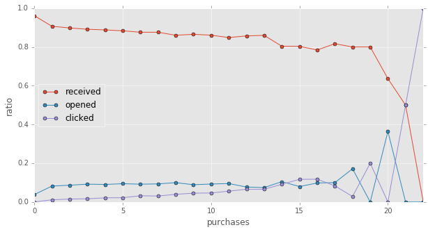
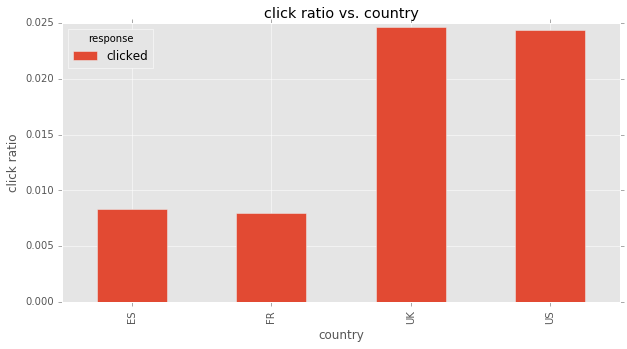
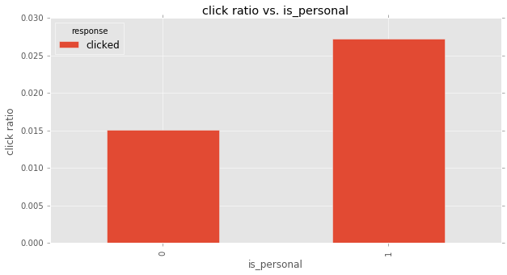
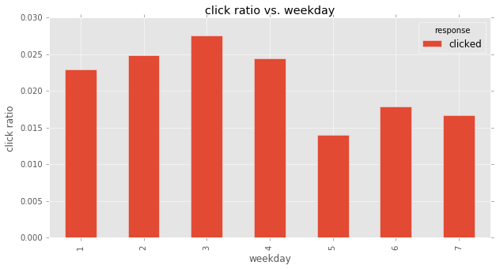
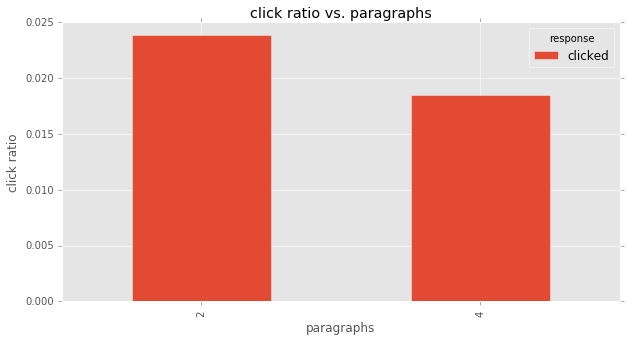
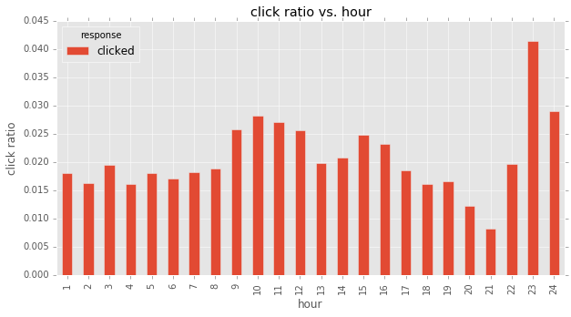
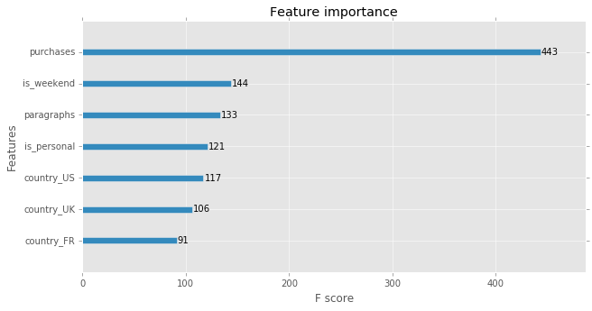
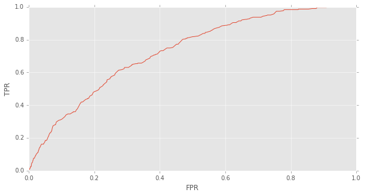

Background: This notebook aims to optimize the marketing campaigns. Specifically, we will achieve: - What percentage of users opened the email? - what percentage clicked on the link within the email? - build a model to optimize in future email campaigns to maximize the probability of users who click on the link/total users who received the email. How would you test that - find interesting pattern on how the email campaign performed for different segments of users.
import itertools
import _pickle as cPickle
import numpy as np
import pandas as pd
import matplotlib.pyplot as plt
plt.style.use("ggplot")
from sklearn.feature_selection import chi2,f_classif
from sklearn.preprocessing import LabelEncoder
from sklearn.metrics import classification_report,roc_curve,precision_score,recall_score,auc,precision_recall_curve
from sklearn.model_selection import train_test_split
import xgboost as xgbseed = 9999
plt.style.use('ggplot')
%matplotlib inlineIndex
- Load emails from CSV
- Answer Question 1
- Explore the data
- Answer Question 4
- Build Predictive Model
- Answer question 2 and question 3’s first part
- Answer question 3’s second part
- Answers summary:
Load emails information from CSV file
emails = pd.read_csv("email_table.csv",index_col="email_id")Columns:
- email_id : the Id of the email that was sent. It is unique by email
- email_text : there are two versions of the email: one has “long text” (i.e. has 4 paragraphs) and one has “short text” (just 2 paragraphs)
- email_version : some emails were “personalized” (i.e. they had the name of the user receiving the email in the incipit, such as “Hi John,”), while some emails were “generic” (the incipit was just “Hi,”).
- hour : the user local time when the email was sent.
- weekday : the day when the email was sent.
- user_country : the country where the user receiving the email was based. It comes from the user ip address when she created the account.
- user_past_purchases : how many items in the past were bought by the user receiving the email
emails.sample(10)# view some data to get a feeling| email_text | email_version | hour | weekday | user_country | user_past_purchases | |
|---|---|---|---|---|---|---|
| email_id | ||||||
| 434924 | long_email | personalized | 3 | Tuesday | US | 1 |
| 97442 | long_email | personalized | 9 | Thursday | FR | 7 |
| 919106 | short_email | generic | 16 | Friday | US | 4 |
| 476265 | long_email | generic | 13 | Saturday | UK | 2 |
| 723144 | long_email | personalized | 12 | Monday | US | 6 |
| 518804 | short_email | generic | 7 | Wednesday | UK | 7 |
| 801247 | short_email | personalized | 6 | Tuesday | US | 0 |
| 946474 | long_email | generic | 9 | Friday | US | 18 |
| 867238 | short_email | generic | 3 | Friday | UK | 7 |
| 750202 | short_email | generic | 13 | Sunday | UK | 8 |
# email_text : there are two versions of the email:
# one has "long text" (i.e. has 4 paragraphs) and one has "short text" (just 2 paragraphs)
# since we need to change all features into numbers, so I replace 'email_text' with 'paragraphs'
emails["paragraphs"] = np.where(emails.email_text == 'short_email',2,4)
del emails["email_text"]
# email_version : some emails were "personalized" (i.e. they had name of the user in incipit, such as "Hi John,"),
# while some emails were "generic" (the incipit was just "Hi,").
emails["is_personal"] = (emails.email_version == "personalized").astype(np.int)
del emails["email_version"]
weekday2index = {"Monday":1,"Tuesday":2,"Wednesday":3,"Thursday":4,"Friday":5,"Saturday":6,"Sunday":7}
emails["weekday"] = emails.weekday.map(weekday2index)
# rename long column names to shorter names, make it easier to read
emails.rename(columns={'user_past_purchases':'purchases','user_country':'country'},inplace=True)assemble emails’ response together
emails["response"] = "received"
open_users = pd.read_csv("email_opened_table.csv").email_id
emails.loc[open_users,"response"] = "opened"
click_users = pd.read_csv("link_clicked_table.csv").email_id
emails.loc[click_users,"response"] = 'clicked'emails.head()# check some data to get a feeling| hour | weekday | country | purchases | paragraphs | is_personal | response | |
|---|---|---|---|---|---|---|---|
| email_id | |||||||
| 85120 | 2 | 7 | US | 5 | 2 | 1 | received |
| 966622 | 12 | 7 | UK | 2 | 4 | 1 | clicked |
| 777221 | 11 | 3 | US | 2 | 4 | 1 | received |
| 493711 | 6 | 1 | UK | 1 | 2 | 0 | received |
| 106887 | 14 | 1 | US | 6 | 4 | 0 | received |
# output a csv file
emails.to_csv("clean_emails.csv",index_label="email_id")Answer question 1
- What percentage of users opened the email?
- what percentage clicked on the link within the email?
rslt_dist = emails.response.value_counts(normalize=True)
rslt_distreceived 0.89605
opened 0.08276
clicked 0.02119
Name: response, dtype: float64print "{:.2f}% of users opened the email".format((1 - rslt_dist.received) * 100)
print "{:.2f}% of users clicked the link".format(rslt_dist.clicked * 100)10.39% of users opened the email
2.12% of users clicked the linkExplore the data
def count_result_ratio(df):
counts = df.response.value_counts(normalize=True)
counts['total'] = df.shape[0]
return counts
def grp_count_plotbar(key):
grpresult = emails.groupby(key).apply(count_result_ratio)
# grpresult.loc[:,["received","opened",'clicked']].plot(kind='bar')
grpresult.loc[:,['clicked']].plot(kind='bar',title='click ratio vs. {}'.format(key))
plt.ylabel('click ratio')
return grpresultChi-square test and F-test
resp_lb_encoder = LabelEncoder()
cnty_lb_encoder = LabelEncoder()
X = emails.copy()
y = resp_lb_encoder.fit_transform(X.response)
del X["response"]
feat_names = ["hour","weekday","country","purchases","paragraphs","is_personal"]
X = X.loc[:,feat_names]
X["country"] = cnty_lb_encoder.fit_transform(X.country)
chi2scores,_ = chi2(X,y)
fscores,_ = f_classif(X,y)
feat_scores = pd.DataFrame({"chi2scores":chi2scores,"fscores":fscores},index=feat_names)feat_scores.sort_values(by='chi2scores',ascending=False)| chi2scores | fscores | |
|---|---|---|
| purchases | 3448.795660 | 663.388596 |
| country | 378.554465 | 435.696911 |
| is_personal | 316.752872 | 317.427444 |
| weekday | 210.006087 | 105.002643 |
| hour | 147.815921 | 33.992047 |
| paragraphs | 53.952439 | 81.209295 |
feat_scores.sort_values(by="fscores",ascending=False)| chi2scores | fscores | |
|---|---|---|
| purchases | 3448.795660 | 663.388596 |
| country | 378.554465 | 435.696911 |
| is_personal | 316.752872 | 317.427444 |
| weekday | 210.006087 | 105.002643 |
| paragraphs | 53.952439 | 81.209295 |
| hour | 147.815921 | 33.992047 |
from the test result, we can know that,
- important features: previous purchase counts, user’s country, email’s version (personal or general)
- not so important features maybe include: weekday, email’s text (short or long), hour to send the email
previous purchase vs. response
rslt_grpby_purchase = emails.groupby("purchases").apply(count_result_ratio).unstack()
rslt_grpby_purchase.fillna(value=0,inplace=True)plt.rc('figure', figsize=(10, 5))
rslt_grpby_purchase.loc[:,["received","opened",'clicked']].plot(marker='o',markersize=5)
plt.ylabel("ratio")<matplotlib.text.Text at 0x11bb87850>
from above plot, we can know, the more items a certain user purchased previously, the more likely that user will open the email or click the link.
user’s country vs. response
grp_count_plotbar('country')| response | received | opened | clicked | total |
|---|---|---|---|---|
| country | ||||
| ES | 0.960570 | 0.031103 | 0.008327 | 9967.0 |
| FR | 0.958779 | 0.033217 | 0.008004 | 9995.0 |
| UK | 0.879282 | 0.096043 | 0.024675 | 19939.0 |
| US | 0.880481 | 0.095160 | 0.024360 | 60099.0 |

from above plots, we see that, ‘open percentage’ and ‘click percentage’ is much higher (nearly 3 times) in UK and US than in France and Spain.
this may be the translation issue. I guess the emails are written in English, which is unreadable to some non-English-speaking users, which cause the low ‘click ratio’ in non-English-speaking countries.
email’s version vs. response
grp_count_plotbar('is_personal')| response | received | opened | clicked | total |
|---|---|---|---|---|
| is_personal | ||||
| 0 | 0.920034 | 0.064829 | 0.015137 | 50209.0 |
| 1 | 0.871864 | 0.100842 | 0.027294 | 49791.0 |

‘personalized email’ has higher ‘click ratio’ than ‘general email’. this is very easy to understand. Having my name in the recipient, at least I am some kind of ‘important’ to the company, other than some ordinary people which the company don’t bother to remember his name.
weekday vs. response
grp_count_plotbar('weekday')| response | received | opened | clicked | total |
|---|---|---|---|---|
| weekday | ||||
| 1 | 0.883590 | 0.093504 | 0.022906 | 14363.0 |
| 2 | 0.879092 | 0.096019 | 0.024889 | 14143.0 |
| 3 | 0.879296 | 0.093084 | 0.027620 | 14084.0 |
| 4 | 0.881348 | 0.094207 | 0.024445 | 14277.0 |
| 5 | 0.925019 | 0.060944 | 0.014037 | 14177.0 |
| 6 | 0.912005 | 0.070149 | 0.017846 | 14569.0 |
| 7 | 0.911448 | 0.071801 | 0.016751 | 14387.0 |

Friday, Saturday, Sunday have obviously lower ‘click ratio’ than Monday to Thursday. People normally don’t process emails during weekends.
email text vs. response
grp_count_plotbar('paragraphs')| response | received | opened | clicked | total |
|---|---|---|---|---|
| paragraphs | ||||
| 2 | 0.883698 | 0.092430 | 0.023872 | 49724.0 |
| 4 | 0.908266 | 0.073196 | 0.018538 | 50276.0 |

sending hour vs. response
grp_count_plotbar('hour')| response | received | opened | clicked | total |
|---|---|---|---|---|
| hour | ||||
| 1 | 0.910840 | 0.071032 | 0.018128 | 2703.0 |
| 2 | 0.911589 | 0.072089 | 0.016322 | 3676.0 |
| 3 | 0.915184 | 0.065293 | 0.019523 | 4610.0 |
| 4 | 0.911419 | 0.072394 | 0.016186 | 5622.0 |
| 5 | 0.917417 | 0.064570 | 0.018013 | 6551.0 |
| 6 | 0.909176 | 0.073677 | 0.017147 | 7465.0 |
| 7 | 0.909434 | 0.072282 | 0.018284 | 8204.0 |
| 8 | 0.911407 | 0.069659 | 0.018933 | 8398.0 |
| 9 | 0.873725 | 0.100481 | 0.025794 | 8529.0 |
| 10 | 0.866993 | 0.104768 | 0.028240 | 8180.0 |
| 11 | 0.872645 | 0.100227 | 0.027128 | 7483.0 |
| 12 | 0.875230 | 0.099109 | 0.025661 | 6508.0 |
| 13 | 0.890521 | 0.089590 | 0.019889 | 5581.0 |
| 14 | 0.889520 | 0.089738 | 0.020742 | 4580.0 |
| 15 | 0.894074 | 0.081019 | 0.024907 | 3493.0 |
| 16 | 0.894165 | 0.082639 | 0.023197 | 2759.0 |
| 17 | 0.890650 | 0.090861 | 0.018489 | 1893.0 |
| 18 | 0.905700 | 0.078114 | 0.016186 | 1421.0 |
| 19 | 0.924862 | 0.058564 | 0.016575 | 905.0 |
| 20 | 0.911585 | 0.076220 | 0.012195 | 656.0 |
| 21 | 0.942466 | 0.049315 | 0.008219 | 365.0 |
| 22 | 0.931373 | 0.049020 | 0.019608 | 204.0 |
| 23 | 0.917241 | 0.041379 | 0.041379 | 145.0 |
| 24 | 0.840580 | 0.130435 | 0.028986 | 69.0 |

although from above plot, it seems ‘sending hour’ has some impact on ‘clicked ratio’. however, that may be caused by much fewer examples in late hours. also according to statistical test‘s result, I don’t think ‘sending hour’ is an important feature, and won’t include it in my model.
Answer question 4
Did you find any interesting pattern on how the email campaign performed for different segments of users? Explain.
from above explorary analysis, I can find some interesting patterns listed below:
- The more item a certain user purchased in the past, the more likely that user will click the link
- Users from English-speaking coutries are more likely to click the link, which may be caused by some translation issue.
- Personalized email is more likely to be opened and clicked
- Emails sent at weekends is less likely to be opened and clicked
- Sending hour and #Paragraphs are not very important features to affect click rate
Build Predictive Model
In this section, I will build a model to predict whether a user will open the email and click the link inside it.
Prepare the data
del X
X = emails.copy()
X.sample(5)# get a feeling about current data| hour | weekday | country | purchases | paragraphs | is_personal | response | |
|---|---|---|---|---|---|---|---|
| email_id | |||||||
| 785135 | 10 | 4 | UK | 4 | 4 | 0 | received |
| 479664 | 4 | 5 | UK | 0 | 4 | 0 | received |
| 233005 | 19 | 5 | US | 10 | 4 | 0 | received |
| 285041 | 15 | 2 | US | 7 | 4 | 1 | received |
| 10411 | 2 | 5 | UK | 5 | 4 | 0 | received |
# select original features
# 'paragraphs' isn't an important feature, but I will include it, and see how RF say about it
X = X.loc[:,["country","purchases","paragraphs","is_personal"] ]
# create new feature
X['is_weekend'] = (emails.weekday>=5).astype(int)
# One-Hot-Encode 'country' feature
X = pd.get_dummies(X,columns=["country"],drop_first=True)
# prepare the target
y = (emails.response == 'clicked').astype(int)X.sample(5)# check the data| purchases | paragraphs | is_personal | is_weekend | country_FR | country_UK | country_US | |
|---|---|---|---|---|---|---|---|
| email_id | |||||||
| 231912 | 5 | 2 | 1 | 1 | 0.0 | 0.0 | 0.0 |
| 538951 | 5 | 2 | 1 | 0 | 0.0 | 0.0 | 0.0 |
| 716309 | 5 | 2 | 1 | 0 | 1.0 | 0.0 | 0.0 |
| 695780 | 6 | 4 | 1 | 1 | 0.0 | 0.0 | 1.0 |
| 586318 | 2 | 4 | 1 | 0 | 0.0 | 0.0 | 1.0 |
# split for training and testing
Xtrain,Xtest,ytrain,ytest = train_test_split(X,y,test_size=0.33333,random_state = seed)print 'Train set shape: {}, positive ratio={:.3f}'.format(Xtrain.shape,ytrain.mean())
print 'Test set shape: {}, positive ratio={:.3f}'.format(Xtest.shape,ytest.mean())Train set shape: (66667, 7), positive ratio=0.021
Test set shape: (33333, 7), positive ratio=0.022Train the model
Due to time limitation, I will just train one GBM model.
If given sufficient time, I will apply following strategies to improve the model:
- build multiple models, and ensemble them (average or stacking) to improve the prediction performance.
- try more hyper-parameters to find better ones.
train_matrix = xgb.DMatrix(Xtrain,ytrain)
test_matrix = xgb.DMatrix(Xtest)params = {}
params['objective'] = 'binary:logistic' # output probabilities
params['eval_metric'] = 'auc'
params["num_rounds"] = 300
params["early_stopping_rounds"] = 30
# params['min_child_weight'] = 2
params['max_depth'] = 6
params['eta'] = 0.1
params["subsample"] = 0.8
params["colsample_bytree"] = 0.8
cv_results = xgb.cv(params,train_matrix,
num_boost_round = params["num_rounds"],
nfold = params.get('nfold',5),
metrics = params['eval_metric'],
early_stopping_rounds = params["early_stopping_rounds"],
verbose_eval = True,
seed = seed)[0] train-auc:0.677493+0.00828721 test-auc:0.672627+0.00998874
[1] train-auc:0.697782+0.00882727 test-auc:0.696658+0.0206434
[2] train-auc:0.70463+0.00828662 test-auc:0.702561+0.0208773
[3] train-auc:0.711914+0.00409068 test-auc:0.710696+0.0228788
[4] train-auc:0.714488+0.00278646 test-auc:0.712043+0.0193185
[5] train-auc:0.717649+0.00424529 test-auc:0.714465+0.0207032
[6] train-auc:0.719344+0.00510737 test-auc:0.715544+0.0193956
[7] train-auc:0.724209+0.00365824 test-auc:0.719632+0.0165027
[8] train-auc:0.729045+0.00371847 test-auc:0.72386+0.0148701
[9] train-auc:0.730501+0.00375046 test-auc:0.724429+0.0142755
[10] train-auc:0.732467+0.0026696 test-auc:0.726337+0.0156743
[11] train-auc:0.735537+0.00246068 test-auc:0.729132+0.0162888
[12] train-auc:0.737188+0.00155158 test-auc:0.730848+0.0168706
[13] train-auc:0.738333+0.00183292 test-auc:0.73156+0.016002
[14] train-auc:0.740307+0.00175305 test-auc:0.732328+0.0157333
[15] train-auc:0.741514+0.00256378 test-auc:0.733169+0.0154183
[16] train-auc:0.742537+0.0021792 test-auc:0.733099+0.0151237
[17] train-auc:0.744702+0.00246548 test-auc:0.735111+0.0143654
[18] train-auc:0.744979+0.00216543 test-auc:0.735508+0.0144697
[19] train-auc:0.746026+0.00214697 test-auc:0.736038+0.0145
[20] train-auc:0.747204+0.00234766 test-auc:0.73719+0.0144764
[21] train-auc:0.748409+0.0027355 test-auc:0.737671+0.0133952
[22] train-auc:0.749618+0.00291407 test-auc:0.738383+0.0132849
[23] train-auc:0.750261+0.0030989 test-auc:0.739096+0.0125292
[24] train-auc:0.750758+0.00331821 test-auc:0.739578+0.0117813
[25] train-auc:0.751382+0.00282425 test-auc:0.739345+0.0120623
[26] train-auc:0.752415+0.00346696 test-auc:0.740137+0.010798
[27] train-auc:0.75338+0.00363762 test-auc:0.740929+0.0106986
[28] train-auc:0.754266+0.00323947 test-auc:0.741637+0.0107274
[29] train-auc:0.754915+0.00302772 test-auc:0.741759+0.0112564
[30] train-auc:0.755914+0.0028627 test-auc:0.742037+0.0113041
[31] train-auc:0.756318+0.0033501 test-auc:0.7425+0.0109369
[32] train-auc:0.756882+0.00331093 test-auc:0.74231+0.0109721
[33] train-auc:0.757279+0.00329185 test-auc:0.742169+0.011238
[34] train-auc:0.757727+0.00332192 test-auc:0.74215+0.0115881
[35] train-auc:0.758015+0.00318842 test-auc:0.742415+0.0118561
[36] train-auc:0.75832+0.00301207 test-auc:0.742148+0.0119087
[37] train-auc:0.758837+0.00294787 test-auc:0.742522+0.0116916
[38] train-auc:0.759134+0.00323002 test-auc:0.742998+0.0112852
[39] train-auc:0.759435+0.00314337 test-auc:0.743453+0.0113958
[40] train-auc:0.759625+0.00329416 test-auc:0.743103+0.0111658
[41] train-auc:0.760182+0.00309855 test-auc:0.743537+0.0108819
[42] train-auc:0.760478+0.00316004 test-auc:0.743372+0.011017
[43] train-auc:0.760531+0.00324614 test-auc:0.743372+0.0112937
[44] train-auc:0.760811+0.00309214 test-auc:0.743344+0.0112747
[45] train-auc:0.761199+0.00302771 test-auc:0.743541+0.0114938
[46] train-auc:0.761436+0.00302944 test-auc:0.743817+0.0118088
[47] train-auc:0.761543+0.00314059 test-auc:0.744085+0.0117599
[48] train-auc:0.761755+0.00306749 test-auc:0.744454+0.0118087
[49] train-auc:0.761926+0.00314977 test-auc:0.744501+0.0118104
[50] train-auc:0.762055+0.00309526 test-auc:0.744369+0.0119067
[51] train-auc:0.762271+0.00292601 test-auc:0.744522+0.0120931
[52] train-auc:0.762409+0.00301158 test-auc:0.744722+0.0119359
[53] train-auc:0.762461+0.00298882 test-auc:0.744397+0.0117605
[54] train-auc:0.762592+0.00298153 test-auc:0.744378+0.0119351
[55] train-auc:0.762895+0.00297585 test-auc:0.744472+0.0118786
[56] train-auc:0.762913+0.00296567 test-auc:0.744442+0.0117821
[57] train-auc:0.763132+0.00301844 test-auc:0.744228+0.0117882
[58] train-auc:0.763194+0.0029937 test-auc:0.744274+0.0116317
[59] train-auc:0.763377+0.00302593 test-auc:0.744082+0.011701
[60] train-auc:0.763542+0.00298474 test-auc:0.743952+0.0117522
[61] train-auc:0.763706+0.00296295 test-auc:0.743824+0.0117634
[62] train-auc:0.763734+0.00293909 test-auc:0.743966+0.0115998
[63] train-auc:0.763867+0.00296588 test-auc:0.743936+0.0116863
[64] train-auc:0.763986+0.0029833 test-auc:0.743937+0.0116513
[65] train-auc:0.764118+0.00302993 test-auc:0.743966+0.0117081
[66] train-auc:0.764343+0.00292955 test-auc:0.743819+0.01163
[67] train-auc:0.76442+0.00289046 test-auc:0.743918+0.0116983
[68] train-auc:0.76458+0.00284802 test-auc:0.744038+0.0113129
[69] train-auc:0.764717+0.00293263 test-auc:0.743734+0.0113893
[70] train-auc:0.764937+0.00289321 test-auc:0.743605+0.0114114
[71] train-auc:0.764969+0.00291843 test-auc:0.743335+0.0114451
[72] train-auc:0.765096+0.00293488 test-auc:0.743135+0.0116176
[73] train-auc:0.765168+0.00292989 test-auc:0.743155+0.0116143
[74] train-auc:0.765326+0.00296368 test-auc:0.743008+0.0114881
[75] train-auc:0.765443+0.00296921 test-auc:0.743122+0.0115193
[76] train-auc:0.765457+0.00295559 test-auc:0.743204+0.011375
[77] train-auc:0.765536+0.00298759 test-auc:0.74318+0.0113059
[78] train-auc:0.765807+0.00298637 test-auc:0.74306+0.0113673
[79] train-auc:0.765864+0.00301058 test-auc:0.743087+0.0114866
[80] train-auc:0.765975+0.00306381 test-auc:0.743178+0.011708
[81] train-auc:0.766011+0.00310261 test-auc:0.743395+0.0116618n_best_trees = cv_results.shape[0]
print "best number of trees: {}".format(n_best_trees)best number of trees: 53watchlist = [(train_matrix, 'train')]
gbt = xgb.train(params, train_matrix, n_best_trees,watchlist)[0] train-auc:0.702188
[1] train-auc:0.704781
[2] train-auc:0.71018
[3] train-auc:0.714805
[4] train-auc:0.715547
[5] train-auc:0.726005
[6] train-auc:0.725821
[7] train-auc:0.725022
[8] train-auc:0.7335
[9] train-auc:0.735223
[10] train-auc:0.736723
[11] train-auc:0.74205
[12] train-auc:0.742289
[13] train-auc:0.742862
[14] train-auc:0.743885
[15] train-auc:0.743699
[16] train-auc:0.742109
[17] train-auc:0.744295
[18] train-auc:0.746087
[19] train-auc:0.74534
[20] train-auc:0.743896
[21] train-auc:0.74842
[22] train-auc:0.7502
[23] train-auc:0.750863
[24] train-auc:0.750096
[25] train-auc:0.752116
[26] train-auc:0.752202
[27] train-auc:0.752974
[28] train-auc:0.752529
[29] train-auc:0.752424
[30] train-auc:0.753932
[31] train-auc:0.753449
[32] train-auc:0.754669
[33] train-auc:0.755053
[34] train-auc:0.755589
[35] train-auc:0.755971
[36] train-auc:0.757188
[37] train-auc:0.757529
[38] train-auc:0.757631
[39] train-auc:0.757584
[40] train-auc:0.757568
[41] train-auc:0.758382
[42] train-auc:0.758155
[43] train-auc:0.758213
[44] train-auc:0.758067
[45] train-auc:0.7586
[46] train-auc:0.758911
[47] train-auc:0.759027
[48] train-auc:0.759092
[49] train-auc:0.759198
[50] train-auc:0.759484
[51] train-auc:0.759869
[52] train-auc:0.760239# plot feature importances
xgb.plot_importance(gbt)<matplotlib.axes._subplots.AxesSubplot at 0x11ffb4e90>
above feature importance match the result from explorary analysis.
Plot ROC curve and choose better probability threshold
since the data is highly imbalanced (positive examples is only 2% of the total examples), if using default probability threshold (0.5), the model just classify every example as negative, so we need to plot the ROC curve and choose a better probability threshold.
But ROC cannot be plot on either training set or test set. so I split the original train set into ‘training’ and ‘validation’ sets, re-train on ‘training set’ and plot ROC on ‘validation set’.
print "n_best_trees={},xgboost parameters: ".format(n_best_trees)
paramsn_best_trees=53,xgboost parameters:
{'colsample_bytree': 0.8,
'early_stopping_rounds': 30,
'eta': 0.1,
'eval_metric': 'auc',
'max_depth': 6,
'num_rounds': 300,
'objective': 'binary:logistic',
'subsample': 0.8}# define a function, avoid pollute the current namespace
def validation_roc():
Xtrain_only,Xvalid,ytrain_only,yvalid = train_test_split(Xtrain,ytrain,test_size=0.2,random_state=seed)
train_only_matrix = xgb.DMatrix(Xtrain_only,ytrain_only)
valid_matrix = xgb.DMatrix(Xvalid)
# retrain on training set
gbt_train_only = xgb.train(params, train_only_matrix, n_best_trees)
# predict on validation set
yvalid_probas = gbt_train_only.predict(valid_matrix, ntree_limit=n_best_trees)
d = {}
d['FPR'],d['TPR'],d['Threshold'] = roc_curve(yvalid,yvalid_probas)
return pd.DataFrame(d)roc_results = validation_roc()_ = plt.figure()
plt.plot(roc_results.FPR,roc_results.TPR)
plt.xlabel("FPR")
plt.ylabel('TPR')<matplotlib.text.Text at 0x11abea2d0>
according to above ROC curve and make a compromise between Precision and Recall, I decide to choose a threshold which makes TPR at about 0.6, then FPR will be about 0.3, which I think is acceptable.
roc_results.loc[(roc_results.TPR > 0.6) & (roc_results.TPR < 0.65),:]| FPR | TPR | Threshold | |
|---|---|---|---|
| 192 | 0.274192 | 0.613861 | 0.030303 |
| 193 | 0.274729 | 0.613861 | 0.030261 |
| 194 | 0.274960 | 0.613861 | 0.030247 |
| 195 | 0.284245 | 0.617162 | 0.030224 |
| 196 | 0.288389 | 0.620462 | 0.029755 |
| 197 | 0.288619 | 0.620462 | 0.029587 |
| 198 | 0.290998 | 0.623762 | 0.029482 |
| 199 | 0.291229 | 0.623762 | 0.029463 |
| 200 | 0.291996 | 0.630363 | 0.029195 |
| 201 | 0.292380 | 0.630363 | 0.029118 |
| 202 | 0.294298 | 0.630363 | 0.028849 |
| 203 | 0.295296 | 0.630363 | 0.028624 |
| 204 | 0.296217 | 0.630363 | 0.028613 |
| 205 | 0.302663 | 0.630363 | 0.028445 |
| 206 | 0.303661 | 0.630363 | 0.028363 |
| 207 | 0.303737 | 0.630363 | 0.028344 |
| 208 | 0.304044 | 0.630363 | 0.028225 |
| 209 | 0.313944 | 0.643564 | 0.028042 |
| 210 | 0.314020 | 0.646865 | 0.028016 |
| 211 | 0.315709 | 0.646865 | 0.027908 |
| 212 | 0.316016 | 0.646865 | 0.027625 |
# choose a threshold based on ROC
# FPR=0.292380, TPR=0.630363, Threshold=0.029118
pos_prob_threshold = 0.029118
def adjust_predict(matrix):
y_probas = gbt.predict(matrix, ntree_limit=n_best_trees)
return (y_probas > pos_prob_threshold).astype(int)ytrain_pred = adjust_predict(train_matrix)
print classification_report(ytrain,ytrain_pred) precision recall f1-score support
0 0.99 0.72 0.83 65265
1 0.05 0.65 0.09 1402
avg / total 0.97 0.71 0.82 66667ytest_pred = adjust_predict(test_matrix)
print classification_report(ytest,ytest_pred) precision recall f1-score support
0 0.99 0.71 0.83 32616
1 0.04 0.60 0.08 717
avg / total 0.97 0.71 0.81 33333more accurate Precision and Recall
print "test precision: {:.2f}%".format(precision_score(ytest,ytest_pred) * 100)
print "test recall: {:.2f}%".format(recall_score(ytest,ytest_pred) * 100)test precision: 4.35%
test recall: 60.11%gbt.save_model('gbt.model')Answer question 2 and question 3’s first part
- The VP of marketing thinks that it is stupid to send emails to a random subset and in a random way. Based on all the information you have about the emails that were sent, can you build a model to optimize in future email campaigns to maximize the probability of users clicking on the link inside the email?
- By how much do you think your model would improve click through rate ( defined as # of users who click on the link / total users who received the email). How would you test that?
I have build a Gradient Boosting Tree model in previous section which predicts whether a user will click the link or not. Then the new email campaign strategy will be: only send email to users which my GBM model predicts positive.
n_emails_old_sent = ytest_pred.shape[0]
n_emails_new_sent = ytest_pred.sum()
saving_percentage = 100 - n_emails_new_sent * 100.0/n_emails_old_sent
pd.Series({'#emails sent in old way': n_emails_old_sent,
'#emails sent in new way': n_emails_new_sent,
'saving percentage (%)': saving_percentage})#emails sent in new way 9904.000000
#emails sent in old way 33333.000000
saving percentage (%) 70.287703
dtype: float64according to its predictive result on test set
- my model only need to send 30% of the old email amount, saving 70% amount.
- my model will cover 60% of valued users which will click the link.
- 4.35% of the receiver will open email and click the link. compare with old strategy, whose click rate is 2.12% , my new strategy can double the click rate.
Answer question 3’s second part
By how much do you think your model would improve click through rate ( defined as # of users who click on the link / total users who received the email). How would you test that?
To test my conclusion, we need to perform a A/B test:
- randomly assign users to two groups, Control group and Experiment group.
- in Control group, still use the old email-campaign strategy, i.e., just send emails to all users in Control group.
- in Experiment group, use my model to predict whether the user will click the link or not. and only send emails to those users whose predictive result is positive.
- then we preform a one-tail unpaired t-test to test whether Experiement group’s population proportion is higher than Control group’s population proportion.